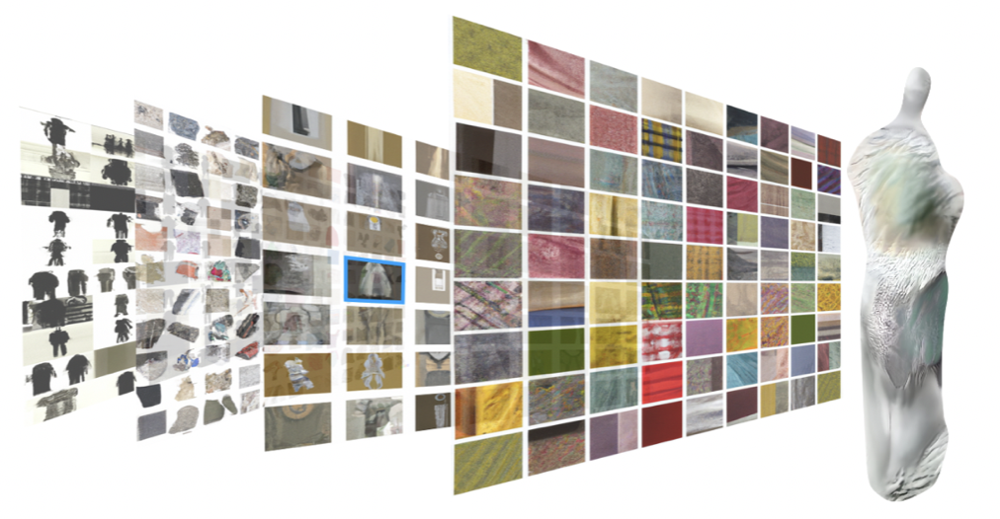
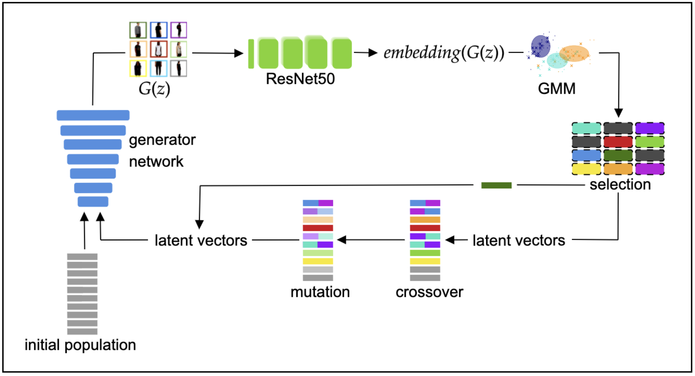

PhD Candidate, IT University of Copenhagen, Denmark
My PhD project Hidden Layer Interaction bridges the fields of mechanistic interpretability and interaction design
by drawing on methods from computer vision and (visual) design.
I hold a BSc from the IT Univeristy of Copenhagen, and a MSc in IT and Cognition from the University of Copenhagen,
where I studied at the Department of Computer Science and the Centre for Language Technology, specializing in machine learning and image processing.
Next to my academic background, I worked on several cultural projects ranging from production and costume assistance to VR and interactive performance with, among others, the XR Studio Makropol, the cultural foundation Toepfer Stiftung, the performance group SIGNA, and the XR Creator's Lab by the Bavarian Film Centre.
Selected projects:

|
Hidden Layer Interaction: A Technique for Exploring the Material of Generative AIsth here |

|
Patch Explorer: An Interface for Interpreting Diffusion Models through Interactionsth here |
|  |
Hidden Layer Interaction: A Co-Creative Design Fiction for Generative AIPaper: Workshop on Generative AI and HCI. CHI '23, Hamburg, Germany. |

|
Towards a Framework for Human-AI Interaction Patterns in Co-Creative GAN Applications
Paper: Joint Proceedings of the ACM IUI Workshops 2022. |
|  |
Evolutionary Search for Fashion Styles in the Latent Space of Generative Adversarial NetworksMSc ThesisSlides Code Paper: International Conference on Computational Intelligence in Music, Sound, Art and Design: EvoMUSART 2022. *Outstanding Student Award |